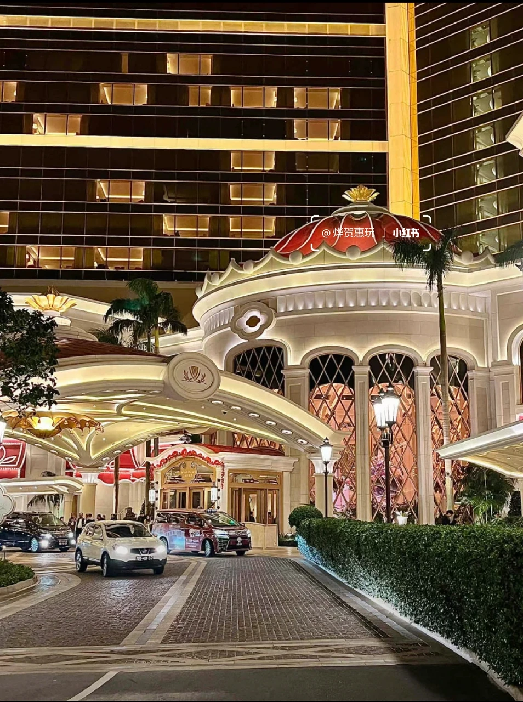
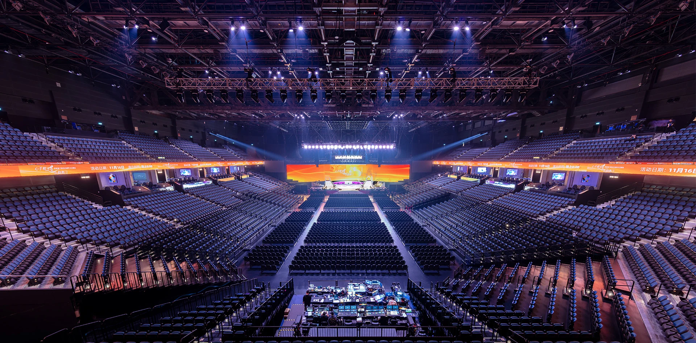

澳門金沙開幕
旗下澳門金沙於五月開幕，拓展澳門綜合旅遊業務。
FINANCIAL REVIEW · 2024
財務報表分析
與企業發展報告
截至 2024 年 12 月 31 日

01 / BACKGROUND
以澳門綜合度假村為核心，連結旅遊、會展、購物與文娛。
旗下澳門金沙於五月開幕，拓展澳門綜合旅遊業務。
八月正式開幕，成為集團路氹金光大道的旗艦物業。
一月一日起進入十年批給期，至 2032 年十二月底屆滿。
01 / BUSINESS
以澳門威尼斯人度假村為例，博彩與非博彩設施共同承接旅客需求。
博彩桌與角子機構成主要博彩設施。
2,841 間標準套房及 64 間御匾會套房。
約 350 間店舖，另設 60 家餐廳及食肆。
金光會展約 120 萬平方呎，配合劇場與綜藝館。
設施數據截至 2024 年底。來源：2024 董事會報告「澳門威尼斯人」。圖片：澳門威尼斯人官方網站。
02 / REVENUE
2024 年度 · 綜合報表 · 百萬澳門元
集團淨收益
先扣除佣金及獎勵，再計算娛樂場淨收益；其他淨收益包括非博彩業務。
42,984 百萬澳門元
13,946 百萬澳門元
本頁為公司集團口徑，涵蓋旗下多個物業。
來源：DICJ：綜合收益及全面收益表、董事會報告。佔比依官方數據計算。
02 / INCOME STATEMENT
截至 2024 年 12 月 31 日止年度 · 百萬澳門元 · 括號表示扣減
| 項目 | 金額 |
|---|---|
| 娛樂場收益總額 | 54,198 |
| 減：佣金及獎勵 | (11,214) |
| 娛樂場收益淨額 | 42,984 |
| 其他淨收益 | 13,946 |
| 淨收益 | 56,930 |
| 博彩稅 | (21,661) |
| 僱員福利開支 | (9,704) |
| 折舊及攤銷 | (5,940) |
| 已消耗存貨 | (717) |
| 其他開支、收益及虧損 | (7,772) |
| 項目 | 金額 |
|---|---|
| 經營利潤 | 11,136 |
| 利息收入 | 458 |
| 經扣除資本化金額後的融資成本 | (3,473) |
| 除所得稅前利潤 | 8,121 |
| 所得稅利益 | 2 |
| 年度利潤 | 8,123 |
| 匯兌差額 | (6) |
| 年度全面收益總額 | 8,117 |
折舊攤銷及融資成本合計 9,413，反映設施投入與融資安排對利潤的影響。
來源：DICJ：2024 綜合收益及全面收益表。本表為原表摘要，合計數依原披露。
03 / ASSETS
2024 年 12 月 31 日 · 綜合報表 · 百萬澳門元
資產總額
非流動資產
69,228
流動資產
14,448
重資產結構需要長期資金支持；物業及設備的賬面值較高。
| 項目 | 金額 |
|---|---|
| 物業及設備淨額 | 57,842 |
| 投資物業淨額 | 3,927 |
| 無形資產淨額 | 3,500 |
| 土地租賃權益淨額 | 2,551 |
| 受限制銀行存款（非流動） | 1,002 |
| 其他非流動資產合計 | 406 |
| 非流動資產總額 | 69,228 |
| 現金及現金等價物 | 11,030 |
| 貿易及其他應收款項及預付款項淨額 | 3,191 |
| 存貨 | 227 |
| 流動資產總額 | 14,448 |
來源：DICJ：2024 綜合資產負債表。406＝其他資產 125＋其他應收及預付款項 281；佔比依原數據計算。
03 / LIABILITIES & EQUITY
2024 年 12 月 31 日 · 綜合報表 · 百萬澳門元
| 項目 | 金額 |
|---|---|
| 貿易及其他應付款項（非流動） | 4,207 |
| 借貸（非流動） | 62,867 |
| 遞延所得稅負債 | 288 |
| 非流動負債總額 | 67,362 |
| 貿易及其他應付款項（流動） | 9,625 |
| 即期所得稅負債 | 1 |
| 借貸（流動） | 80 |
| 流動負債總額 | 9,706 |
| 負債總額 | 77,068 |
| 項目 | 金額 |
|---|---|
| 股本 | 5,000 |
| 權益貢獻 | 4,024 |
| 法定儲備 | 873 |
| 以股份為基礎的補償儲備 | 2,355 |
| 匯兌儲備 | (13) |
| 累計虧損 | (5,654) |
| 本公司權益持有人應佔權益 | 6,585 |
| 非控制性權益 | 23 |
| 權益總額 | 6,608 |
來源：DICJ：2024 綜合資產負債表。數字按原報表列示；個別分項相加或有四捨五入差異。
03 / CAPITAL & LIQUIDITY
以下為集團期末餘額與年度利潤；金額單位為百萬澳門元。
年度保持盈利，但期末仍有累計虧損 5,654。年度利潤與期末權益屬不同概念。
相對流動負債 9,706，現金覆蓋約 1.14 倍，提供一定短期緩衝。
非流動借貸 62,867 加流動借貸 80；借貸主要屬長期。
來源：DICJ：2024 綜合收益表、綜合資產負債表及獨立審計師報告。借貸合計及現金覆蓋倍數依官方數據計算。
04 / FINANCIAL RATIOS
以官方綜合報表計算；比率是觀察工具，應結合借款期限與營運情況閱讀。
CURRENT RATIO
14,448 ÷ 9,706
流動資產高於流動負債，營運資金淨額為 4,742。
LIABILITIES / ASSETS
77,068 ÷ 83,676 × 100%
資產主要以負債支持，需留意再融資條件與利息負擔。
NET PROFIT MARGIN
8,123 ÷ 56,930 × 100%
每 100 元淨收益，約有 14.3 元轉為年度利潤。
經營利潤率另為 19.6%（11,136 ÷ 56,930）；融資成本使稅前利潤進一步收窄。
計算來源：DICJ：2024 綜合收益及全面收益表、綜合資產負債表。文字為基於數據的小組分析。
05 / DEVELOPMENT
以 2024 年董事會報告披露的投資承諾與物業發展為依據。
最低投資承諾
358.0 億澳門元其中非博彩項目
333.6 億澳門元約佔承諾總額 93.2%上述投資須於 2032 年十二月前完成。此處為批給投資承諾，並非 2024 年已支出的金額。

文娛與會展 利用綜藝館與金光會展，服務休閒及商務旅客。
設施升級 威尼斯人綜藝館翻新；集團亦推進倫敦人二期工程。
來源：2024 董事會報告「澳門批給」「澳門威尼斯人」「澳門倫敦人」。93.2% 為自行計算；圖片為官方場地宣傳照。
05 / OUR ANALYSIS
以下為根據財務報表與業務資料作出的小組判斷。
酒店、購物、餐飲與會展可互相導流，提升旅客停留及消費機會。
年度利潤 8,123，現金及現金等價物 11,030，可支持日常營運。
會展可吸引平日商務需求，文娛活動豐富度假體驗。
負債對資產約 92.1%，再融資與利息變化值得關注。
娛樂場淨收益佔 75.5%，業績對旅遊需求及博彩政策較敏感。
非博彩投資規模大，後續營運能否帶來相應回報，仍須持續觀察。
依據：DICJ：2024 綜合報表及董事會報告。本頁為分析意見，不屬公司業績預測。
05 / OUTLOOK
評估轉型成效時，同時看收入、資金負擔與投資回報。
關注酒店、零售、餐飲及文娛是否帶動其他淨收益增長，降低單一收益來源的集中度。
關注長期借款到期安排、融資條件及利息支出，並結合現金流量資料判斷償債能力。
觀察會展、文娛及酒店升級後的客流與盈利表現，評估投資的長期效益。
小組展望，依據 2024 年官方披露整理；並非對未來業績的確定預測。
THE CONCLUSION
博彩與旅遊配套共同構成業務，非博彩拓展具備設施基礎。
年度利潤 8,123 百萬澳門元；長期借款與累計虧損仍需關注。
未來重點是非博彩收入、資金安排與升級項目的回報。
謝謝聆聽 THANK YOU
分析基於 2024 年官方綜合財務資料。